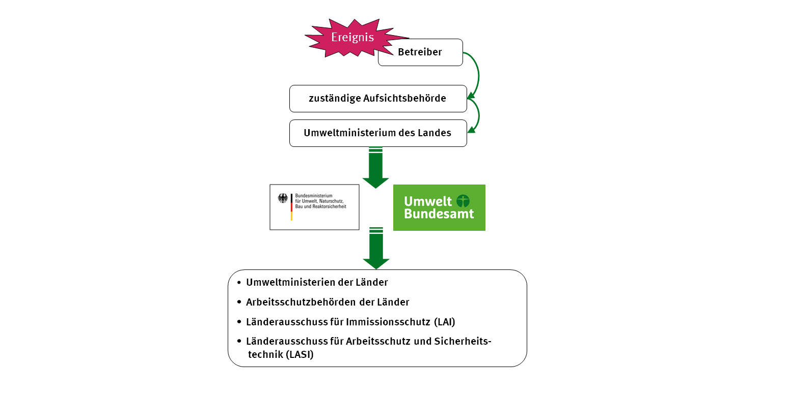
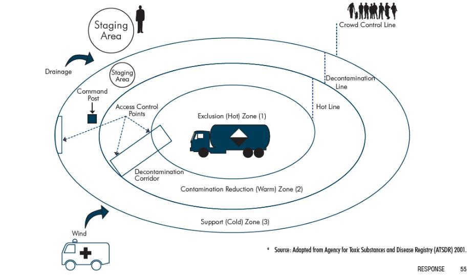

<!DOCTYPE html>
<html>
    <head>
        <meta charset="UTF-8">
        <title>09 Szenarien: CBRN</title>
        
    </head>
    <body>
        
        <div class="article-part article-title"><span class="approved-insertion" data-user="20" data-username="ptinnemann" data-date="26318280">09 Szenarien: CBRN</span></div><div class="article-part article-heading article-subtitle" data-hidden="true"></div><div class="article-part article-contributors article-authors" data-hidden="true"></div><div class="article-part article-richtext article-abstract" data-hidden="true"></div><div class="article-part article-tags article-keywords" data-hidden="true"></div><div class="article-part article-richtext article-body"><h1 id="H1294546"><span class="approved-insertion" data-user="33" data-username="SasseJ" data-date="26318290">9.1 Biologische Gefahren</span></h1><h2 id="H4830969"><span class="approved-insertion" data-user="33" data-username="SasseJ" data-date="26318300">1. </span>Risikobewertung</h2><p><span class="approved-insertion" data-user="34" data-username="SteulK" data-date="26319700">Unter biologischen Gefahren versteht man im allgemeinen die Verbreitung von Infektionserkrankungen oder entsprechenden Erregern. </span><span class="approved-insertion" data-user="33" data-username="SasseJ" data-date="26318350">Für </span><span class="approved-insertion" data-user="33" data-username="SasseJ" data-date="26318400">die Gefähr</span><span class="approved-insertion" data-user="30" data-username="MoellerI" data-date="26319400">d</span><span class="approved-insertion" data-user="33" data-username="SasseJ" data-date="26318400">ungsb</span><span class="approved-insertion" data-user="33" data-username="SasseJ" data-date="26318350">ewertung</span><span class="approved-insertion" data-user="33" data-username="SasseJ" data-date="26318390"> in einer akuten Lage</span><span class="approved-insertion" data-user="33" data-username="SasseJ" data-date="26318350"> ist es hilfreich, das </span><span class="approved-insertion" data-user="33" data-username="SasseJ" data-date="26318300">biologische</span><span class="approved-insertion" data-user="30" data-username="MoellerI" data-date="26319400"> </span><span class="approved-insertion" data-user="33" data-username="SasseJ" data-date="26318300">Agen</span><span class="approved-insertion" data-user="33" data-username="SasseJ" data-date="26318360">s</span><span class="approved-insertion" data-user="34" data-username="SteulK" data-date="26319700"> zu kennen</span><span class="approved-insertion" data-user="33" data-username="SasseJ" data-date="26318360">. </span><span class="approved-insertion" data-user="34" data-username="SteulK" data-date="26319700">Es ist die Unterscheidung zu treffen, ob es sich um die Ausbruchssituation in beispielsweise einer Klinik handelt, wo das Agens/die Infektionsgefahr meist bekannt ist</span><span class="approved-insertion" data-user="34" data-username="SteulK" data-date="26319710">; oder</span><span class="approved-insertion" data-user="36" data-username="KnauerC" data-date="26320900"> ob</span><span class="approved-insertion" data-user="34" data-username="SteulK" data-date="26319710"> </span><span class="approved-insertion" data-user="33" data-username="SasseJ" data-date="26319850">es sich</span><span class="approved-insertion" data-user="34" data-username="SteulK" data-date="26319710"> um das gehäufte Auftreten von Erkrankungen, des gleichen Formenkreises und unklarem Erreger</span><span class="approved-insertion" data-user="33" data-username="SasseJ" data-date="26319850"> handelt</span><span class="approved-insertion" data-user="34" data-username="SteulK" data-date="26320800"> (beides am ehesten entsprechend Szenario 2, Figure 1)</span><span class="approved-insertion" data-user="34" data-username="SteulK" data-date="26319710">. Dieses wäre zum Beispiel in einer Pflegeein</span><span class="approved-insertion" data-user="34" data-username="SteulK" data-date="26319720">richtung bei dem gehäuften Auftreten von gastroenteristischen Symptomen denkbar. Möglich</span><span class="approved-insertion" data-user="34" data-username="SteulK" data-date="26319710"> ist in diesem Zusammenhang auch</span><span class="approved-insertion" data-user="34" data-username="SteulK" data-date="26319720"> </span><span class="approved-insertion" data-user="34" data-username="SteulK" data-date="26319710">die Gefährdung durch "Bioterrorismus"  bei </span><span class="approved-insertion" data-user="34" data-username="SteulK" data-date="26320800">(</span><span class="approved-insertion" data-user="34" data-username="SteulK" data-date="26319710">noch</span><span class="approved-insertion" data-user="34" data-username="SteulK" data-date="26320800">)</span><span class="approved-insertion" data-user="34" data-username="SteulK" data-date="26319710"> unbekanntem Status an Betroffenen</span><span class="approved-insertion" data-user="34" data-username="SteulK" data-date="26320800"> (am ehesten Szenario 5; Figure 1)</span><span class="approved-insertion" data-user="34" data-username="SteulK" data-date="26319710">. Hier kommt es </span><span class="approved-insertion" data-user="34" data-username="SteulK" data-date="26319720">auch </span><span class="approved-insertion" data-user="34" data-username="SteulK" data-date="26319710">darauf an labortechnisch entsprechende Testungen zur Verfügung zu haben. E</span><span class="approved-insertion" data-user="33" data-username="SasseJ" data-date="26318360">xistierende Schnelltest</span><span class="approved-insertion" data-user="34" data-username="SteulK" data-date="26319710">s</span><span class="approved-insertion" data-user="33" data-username="SasseJ" data-date="26318360"> sind insbesondere bei Umweltproben</span><span class="approved-insertion" data-user="33" data-username="SasseJ" data-date="26319410"> </span><span class="approved-insertion" data-user="33" data-username="SasseJ" data-date="26318360">nur bedingt zuverlässig und können sowohl zu falsch positiven als auch zu falsch negativen Ergebnissen führen. Eine Analytik in einem erfahrenen Labor ist daher in jedem Fall für eine Risikobewertung notwendig. </span></p><p><span class="approved-insertion" data-user="33" data-username="SasseJ" data-date="26318360">Auch wenn die überwiegende Anzahl</span><span class="approved-insertion" data-user="33" data-username="SasseJ" data-date="26318390"> der Ausbruchsgeschehen eine natürliche Ursache hat, ist bei der Risikobewertung die Möglichkeit einer absichtlichen Ausbringung zu be</span><span class="approved-insertion" data-user="33" data-username="SasseJ" data-date="26319410">denken. </span><span class="approved-insertion" data-user="33" data-username="SasseJ" data-date="26318360"> </span></p><p><span class="approved-insertion" data-user="33" data-username="SasseJ" data-date="26318360">Darüberhinaus sind folgende Kritien einzubeziehen: </span></p><ul><li><p><span class="approved-insertion" data-user="33" data-username="SasseJ" data-date="26318360">Infektionswege </span></p></li><li><p><span class="approved-insertion" data-user="33" data-username="SasseJ" data-date="26318360">Infektionsroute </span></p></li><li><p><span class="approved-insertion" data-user="33" data-username="SasseJ" data-date="26318360"> Behandlungsoptionen</span></p></li><li><p><span class="approved-insertion" data-user="33" data-username="SasseJ" data-date="26318390">Verfügbare Schutzmaßnahmen</span></p></li><li><p><span class="approved-insertion" data-user="33" data-username="SasseJ" data-date="26319880">Ausbreitungswahrscheinlichkeit</span></p></li></ul><p><span class="approved-insertion" data-user="33" data-username="SasseJ" data-date="26318390">Für eine Risiko</span><span class="approved-insertion" data-user="33" data-username="SasseJ" data-date="26318400">analyse</span><span class="approved-insertion" data-user="33" data-username="SasseJ" data-date="26318390"> im Vorfeld einer Lage, bietet sich </span><span class="approved-insertion" data-user="33" data-username="SasseJ" data-date="26318400">beispielsweise eine </span><a href="https://www.bbk.bund.de/SharedDocs/Downloads/BBK/DE/Downloads/Krisenmanagement/matrix_abb.html" title="https://www.bbk.bund.de/SharedDocs/Downloads/BBK/DE/Downloads/Krisenmanagement/matrix_abb.html"><span class="approved-insertion" data-user="33" data-username="SasseJ" data-date="26318400">Matrix aus Schadensausmaß und Eintrittswahrscheinlichkeit</span></a><span class="approved-insertion" data-user="33" data-username="SasseJ" data-date="26318400"> an.</span></p><p>Eine Risikomatrix kann helfen<span class="approved-insertion" data-user="36" data-username="KnauerC" data-date="26319730">,</span> das zu erwartende Schadensausmaß einzuschätzen, wie d<span class="approved-insertion" data-user="36" data-username="KnauerC" data-date="26320940">er</span> Szenarienüberblick in <strong>Abbildung X </strong>zeigt<span class="approved-insertion" data-user="36" data-username="KnauerC" data-date="26319730"> (Quelle:</span>Generischer Plan für biologische Gefahrenlagen - Anhand von 5 Szenarien<span class="approved-insertion" data-user="36" data-username="KnauerC" data-date="26319740">; </span>Version 2.0 | <a href="http://www.didakat.de">www.didakat.de</a><span class="approved-insertion" data-user="36" data-username="KnauerC" data-date="26319740"> </span>Senatsverwaltung für Gesundheit und Soziales<span class="approved-insertion" data-user="36" data-username="KnauerC" data-date="26320940"> - Abbildung modifiziert in Szenario 5 und 6</span><span class="approved-insertion" data-user="36" data-username="KnauerC" data-date="26319740">)</span><span class="approved-insertion" data-user="36" data-username="KnauerC" data-date="26320940">.</span></p><figure data-equation="" data-image="92" data-figure-category="figure" data-caption="Szenarienüberblick" id="F45281151" data-aligned="center" data-width="100" class="aligned-center image-width-100" data-image-src="/media/images/c54e6a65-100a-4e65-9955-2a641f126acc.png"><div></div><figcaption><span class="figure-cat-figure">Figure</span><span data-caption="Szenarienüberblick">Szenarienüberblick</span></figcaption></figure><p></p><h2 id="H8894627">2. Szenarienspezifische Kommunikation</h2><p><span class="approved-insertion" data-user="33" data-username="SasseJ" data-date="26318400">Insb</span><span class="approved-insertion" data-user="33" data-username="SasseJ" data-date="26318400">esonder</span><span class="approved-insertion" data-user="33" data-username="SasseJ" data-date="26318410">e zu Beginn einer biologischen Lage muss davon ausgegangen werden</span><span class="approved-insertion" data-user="33" data-username="SasseJ" data-date="26318410">, dass nicht bekannt ist, um welches Agens es sich handelt. Auch diese Unsicherheit muss kommuniziert werden - welche Tatsachen bekannt sind, welche vermutet werden und zu welchen weitere Untersuchungen laufen. </span></p><p><span class="approved-insertion" data-user="33" data-username="SasseJ" data-date="26318400">Ein besonderes Augenmerk bei der Kommunikation von Infektionskrankheiten besteht darin, dass der Nachbar / Mitmensch plötzlich als Bedrohung wahrgenommen wird. Daher kommt der Information über Ansteckungswege und die Schutzmaßnahmen eine hohe Bedeutung zu.  </span><span class="approved-insertion" data-user="33" data-username="SasseJ" data-date="26318410">Bei einem abzusehenden Mangel von Schutzmitteln ist zudem damit zu rechnen, dass eine Priorisierung vorgenommen werden muss. Diese muss sehr sorgfältig abgewogen und klar kommuniziert werden - möglichst auch schon im Vorfeld einer Krise. In "Ruhezeiten" ist es für fast alle nachvollziehbar, dass in einer medizinischen Krise das medizinische Personal, dass sich um die Erkrankten kümmern soll, bevorzugt Prophylaxe bekommen muss. </span></p><h2 id="H5420604">3. Alarmierung, Meldewege</h2><p><span class="approved-insertion" data-user="30" data-username="MoellerI" data-date="26319400">Nach Infektionsschutzgesetz</span><span class="approved-insertion" data-user="30" data-username="MoellerI" data-date="26319410"> (IfSG)</span><span class="approved-insertion" data-user="30" data-username="MoellerI" data-date="26319400"> besteht eine unverzügliche Meldepflicht für Ärzte, Leiter von Einrichtungen und Laboren an das zuständige Gesundheitsamt. Die Gesundheitsämter haben eine unverzügliche Übermittlungspflicht an die oberste Landesgesundheitsbehörde, diese wiederum übermittelt an das RKI. Voraussetzung dafür </span><span class="approved-insertion" data-user="30" data-username="MoellerI" data-date="26319410">ist eine 24/7 Erreichbarkeit. Nach § 16 IfSG stellt das Gesundheitsamt unverzüglich Ermittlungen an zur Herkunft des Erregers, zu Kontaktpersonen und legt Maßnahmen zur Verhinderung der Ausbreitung fest (Tätigkeits-/ Besuchsverbote, Beobachtung, häusliche Isolierung</span><span class="approved-insertion" data-user="36" data-username="KnauerC" data-date="26320940">,</span><span class="approved-insertion" data-user="30" data-username="MoellerI" data-date="26319410"> Absonderung in einem entsprechenden Krankenhaus - z. B. Sonderisolierstation gemäß § 30 (6) IfSG....). </span></p><p><span class="approved-insertion" data-user="30" data-username="MoellerI" data-date="26319410">Mit der behandelnden Einrichtung , der Pressestelle und der obersten Landesbehörde ist gemeinsam festzulegen, wie und wann die Öffentlichkeit zu informieren ist. Dafür ist eine zeitnahe Pressekonferenz einzuberufen. Vorher sind Verantwortlichkeiten festzulegen: wer leitet die Pressekonferenz, wer sagt was zu welchem Thema.</span></p><h2 id="H9336856">4. Führungsorganisation</h2><p></p><h2 id="H1542866">5. Akteure und Aufgaben</h2><p><span class="approved-insertion" data-user="33" data-username="SasseJ" data-date="26319410">Bei Biologischen Lagen ist in erster Linie das Gesundheitsamt zuständig.</span><span class="approved-insertion" data-user="33" data-username="SasseJ" data-date="26319410"> </span><span class="approved-insertion" data-user="30" data-username="MoellerI" data-date="26319410">Das Gesundheitsamt hat </span><span class="approved-insertion" data-user="30" data-username="MoellerI" data-date="26319420">intern im Vorfeld einen Krisenstab zu etablieren, </span><span class="approved-insertion" data-user="30" data-username="MoellerI" data-date="26319420">der im Ereignisfall einberufen wird und sofort die Arbeit aufnehmen kann.</span></p><p><span class="approved-insertion" data-user="36" data-username="KnauerC" data-date="26320940">Bei </span><span class="approved-insertion" data-user="30" data-username="MoellerI" data-date="26319420">Patienten mit virusbedingtem haemorrhagischem Fieber, </span><span class="approved-insertion" data-user="30" data-username="MoellerI" data-date="26319430">Lungenp</span><span class="approved-insertion" data-user="30" data-username="MoellerI" data-date="26319420">est, </span><span class="approved-insertion" data-user="30" data-username="MoellerI" data-date="26319430">Lungenmilzbrand und Pocken</span><span class="approved-insertion" data-user="30" data-username="MoellerI" data-date="26319420"> hat eine Absonderung in einer geeigneten Einrichtung (gemäß § 30, Abs 6) zu erfolgen.</span><span class="approved-insertion" data-user="34" data-username="SteulK" data-date="26319690"> </span><span class="approved-insertion" data-user="30" data-username="MoellerI" data-date="26319420">In diesem Fall ist ein Krisenstab einzuberufen und die entsprechende Lage und Aufgaben zu besprechen. Dieser Krisenstab besteht aus dem Leiter des Gesundheitsamtes, einem Vertreter der Sonderisolierstation, der obersten Landesgesundheitsbehörde, der Polizeidirektion, der Landesdirektion (Laborkapazität bis L3), dem Rettungsdienst (Infektions-RTW mit Desinfektionsstützpunkt)</span><span class="approved-insertion" data-user="30" data-username="MoellerI" data-date="26319430">.</span></p><p><span class="approved-insertion" data-user="30" data-username="MoellerI" data-date="26319430">Die Aufgaben dieses Krisenstabes sind:</span></p><p><span class="approved-insertion" data-user="30" data-username="MoellerI" data-date="26319430">- Ermittlung von Kontaktperso</span><span class="approved-insertion" data-user="35" data-username="PukropskiG" data-date="26321130">n</span><span class="approved-insertion" data-user="30" data-username="MoellerI" data-date="26319430">en, Festlegen von antiepidemischen Maßnahmen nach IfSG</span><span class="approved-insertion" data-user="30" data-username="MoellerI" data-date="26319440">, Kategorisierung von Kontaktpersonen</span></p><p><span class="approved-insertion" data-user="30" data-username="MoellerI" data-date="26319430">- Organisation und Überwachung des Patienten</span><span class="approved-insertion" data-user="36" data-username="KnauerC" data-date="26320940"> und des </span><span class="approved-insertion" data-user="30" data-username="MoellerI" data-date="26319430">Probentransports</span></p><p><span class="approved-insertion" data-user="30" data-username="MoellerI" data-date="26319430">- Gewährleistung der Sicherheit (Bewachung, Begleitung von Transporten)</span></p><p><span class="approved-insertion" data-user="30" data-username="MoellerI" data-date="26319430">- Wahrnehmung der Informations- und Beratungsaufgaben für andere Behörden, Einrichtungen und für die Bevölkerung</span></p><p><span class="approved-insertion" data-user="30" data-username="MoellerI" data-date="26319430">- Festlegen und Überwachen von Absonderungen und </span><span class="approved-insertion" data-user="30" data-username="MoellerI" data-date="26319440">Desinfektionsmaßnahmen</span></p><p><span class="approved-insertion" data-user="30" data-username="MoellerI" data-date="26319440">- Amtsärztliche Veranlassung der Absonderung, sowie ggf. der Leichenschau, Beurkundung eines Sterbefalles, Überwachung des Leichentransports und der Kremierung</span></p><p><span class="approved-insertion" data-user="30" data-username="MoellerI" data-date="26319440">- Organisation und Durchführung der Pressearbeit</span></p><p><span class="approved-insertion" data-user="30" data-username="MoellerI" data-date="26319440">- Krisenkommunikation und Risikobewertung, ggf. Hotline einrichten</span></p><p><span class="approved-insertion" data-user="30" data-username="MoellerI" data-date="26319440">- Dokumentation und Evaluierung</span></p><p><span class="approved-insertion" data-user="33" data-username="SasseJ" data-date="26319450">Weitere Akteure: </span></p><ul><li><p><span class="approved-insertion" data-user="33" data-username="SasseJ" data-date="26319460">der </span><strong><span class="approved-insertion" data-user="33" data-username="SasseJ" data-date="26319460">st</span></strong><span class="approved-insertion" data-user="33" data-username="SasseJ" data-date="26319460">ändige </span><strong><span class="approved-insertion" data-user="33" data-username="SasseJ" data-date="26319460">A</span></strong><span class="approved-insertion" data-user="33" data-username="SasseJ" data-date="26319460">rbeitskreis der </span><strong><span class="approved-insertion" data-user="33" data-username="SasseJ" data-date="26319460">Ko</span></strong><span class="approved-insertion" data-user="33" data-username="SasseJ" data-date="26319460">mpetenz- und </span><strong><span class="approved-insertion" data-user="33" data-username="SasseJ" data-date="26319460">B</span></strong><span class="approved-insertion" data-user="33" data-username="SasseJ" data-date="26319460">ehandlungszentren (</span><a href="https://www.rki.de/DE/Content/Kommissionen/Stakob/Stakob_node.html" title="https://www.rki.de/DE/Content/Kommissionen/Stakob/Stakob_node.html"><span class="approved-insertion" data-user="33" data-username="SasseJ" data-date="26319460">STAKOB</span></a><span class="approved-insertion" data-user="33" data-username="SasseJ" data-date="26319460">) ist </span>ein bundesweites Expertennetzwerk<span class="approved-insertion" data-user="33" data-username="SasseJ" data-date="26319460"> f</span>ür das Management und die Versorgung von Patienten mit Krankheiten durch hochpathogene Erreger.<span class="approved-insertion" data-user="33" data-username="SasseJ" data-date="26319460"> Die Kompetenzzentren</span> <span class="approved-insertion" data-user="33" data-username="SasseJ" data-date="26319460">verfügen</span> <span class="approved-insertion" data-user="33" data-username="SasseJ" data-date="26319460">über</span> die spezielle Expertise im <span class="approved-insertion" data-user="33" data-username="SasseJ" data-date="26319460">Bereich des </span>öffentlichen Gesundheitsdienst<span class="approved-insertion" data-user="33" data-username="SasseJ" data-date="26319460">es, während die Behandlungszentren auf die klinische Versorgung in Sonderisolierstationen zur Behandlung von Patienten mit hochpathogenen, lebensbedrohlichen Krankungen spezialisiert sind. Auch zur telefonischen Beratung kann der STAKOB kontaktiert werden. </span></p></li></ul><p><span class="approved-insertion" data-user="33" data-username="SasseJ" data-date="26319410">Bei dem Verdacht auf einen Bioterroristischen Anschlag sind weitere Akteure beteiligt: </span></p><ul><li><p><span class="approved-insertion" data-user="33" data-username="SasseJ" data-date="26319410">die Polizei, um abzuklären, ob es sich um einen begründeten Verdacht handelt. Sie wird entsprechend eine Ernsthaftigkeitsprüfung durchführen. Sollte diese positiv ausfallen, sind weitere Maßnahmen notwendig</span><span class="approved-insertion" data-user="33" data-username="SasseJ" data-date="26319420">, wie z.B. der Ausschluß von Sprengstoffen</span><span class="approved-insertion" data-user="33" data-username="SasseJ" data-date="26319410">.  </span><span class="approved-insertion" data-user="33" data-username="SasseJ" data-date="26319420">Auf die</span><span class="approved-insertion" data-user="33" data-username="SasseJ" data-date="26319410"> Polizei kommt </span><span class="approved-insertion" data-user="33" data-username="SasseJ" data-date="26319420">im weiteren Verlauf </span><span class="approved-insertion" data-user="33" data-username="SasseJ" data-date="26319410">die Ermittlung der Täter zu, sowie die Absperrung des Tatortes. </span></p></li><li><p><span class="approved-insertion" data-user="33" data-username="SasseJ" data-date="26319410">die Feuerwehr im Rahmen der Gefahrenabwehr, um eine weitere Ausbreitung der biologischen Agenzien zu verhindern. </span><span class="approved-insertion" data-user="33" data-username="SasseJ" data-date="26319420">Die Feuerwehr übernimmt auch häufig in Amthilfe für den Amtsarzt die Probenahme. </span></p></li><li><p><span class="approved-insertion" data-user="33" data-username="SasseJ" data-date="26319420">die </span><a href="https://www.bbk.bund.de/DE/AufgabenundAusstattung/CBRNSchutz/ATF/ATF_node.html" title="https://www.bbk.bund.de/DE/AufgabenundAusstattung/CBRNSchutz/ATF/ATF_node.html"><span class="approved-insertion" data-user="33" data-username="SasseJ" data-date="26319420">Analytische Task Force</span></a><span class="approved-insertion" data-user="33" data-username="SasseJ" data-date="26319420"> (ATF) ist vom Bundesamt für Bevölkerungsschutz und Katastrophen</span><span class="approved-insertion" data-user="33" data-username="SasseJ" data-date="26319430">hilfe</span><span class="approved-insertion" data-user="33" data-username="SasseJ" data-date="26319420"> mit spezieller Messtechnik ausgestattet</span><span class="approved-insertion" data-user="33" data-username="SasseJ" data-date="26319430"> worden. Sie ist an 10 Standorten in Deutschland und kann daher innerhalb von maximal 3 Stunden an jedem Ort, zu dem sie gerufen wird, tätig werden. Bei einem Pulverfund vorzugsweise, um eine Freimessung von chemischen und radionuklearen Stoffen vorzunehmen.  </span></p></li></ul><p></p><h2 id="H1950994">6. Ressourcen</h2><ul><li><p><strong><span class="approved-insertion" data-user="33" data-username="SasseJ" data-date="26319860">Personal:</span></strong><span class="approved-insertion" data-user="33" data-username="SasseJ" data-date="26319860"> In biologischen Gefahrenlagen kann das im Umgang mit PSA geschulte medizinische Personal </span><span class="approved-insertion" data-user="33" data-username="SasseJ" data-date="26319870">inkl. Rettungsdienstpersonal </span><span class="approved-insertion" data-user="33" data-username="SasseJ" data-date="26319860">sehr schnell zu einer Mangel-Ressource werden.  Insbesondere bei Nutzung des Infektionsschutzset und der damit verbundenen geringen T</span><span class="approved-insertion" data-user="36" data-username="KnauerC" data-date="26320950">r</span><span class="approved-insertion" data-user="33" data-username="SasseJ" data-date="26319860">agezeit und hohen körperlichen Belastung </span><span class="approved-insertion" data-user="33" data-username="SasseJ" data-date="26319870">wird der</span><span class="approved-insertion" data-user="33" data-username="SasseJ" data-date="26319860"> Mangel an geschultem Personal zusätzlich</span><span class="approved-insertion" data-user="33" data-username="SasseJ" data-date="26319870"> verschärft</span><span class="approved-insertion" data-user="33" data-username="SasseJ" data-date="26319860">. </span></p></li><li><p><strong><span class="approved-insertion" data-user="33" data-username="SasseJ" data-date="26319860">Persönliche Schutzausrüstung (PSA):</span></strong><span class="approved-insertion" data-user="33" data-username="SasseJ" data-date="26319860"> Bei einer deutschlandweiten Krisensituation ist davon auszugehen, dass PSA sehr schnell vergriffen sein wird. Entsprechend ist Vorsorge zu treffen und PSA in ausreichender Menge zu bevorraten. Die ausreichende Menge ist abhängig von der Risikobewertung, welche Szenarien zu erwarten sind und welches Ausmaß diese im eigenen Zuständigkeitsbereich annehmen können. Hierbei sind auch die Tragezeiten zu berücksichtigen. Wie unter "Toolbox - Arbeitsschutz" beschrieben, ist das Infektionsschutzset pro Anzug wesentlich günstiger als ein Gebläseanzug. Aufgrund der kurzen Tragezeit von maximal 2 Stunden, bei Ungeübten auch deutlich kürzer, ist der Verbrauch jedoch deutlich höher. </span></p></li><li><p><strong><span class="approved-insertion" data-user="33" data-username="SasseJ" data-date="26319860">V</span><span class="approved-insertion" data-user="33" data-username="SasseJ" data-date="26319870">er</span><span class="approved-insertion" data-user="33" data-username="SasseJ" data-date="26319860">packungsmater</span><span class="approved-insertion" data-user="33" data-username="SasseJ" data-date="26319870">ial:</span></strong><span class="approved-insertion" data-user="33" data-username="SasseJ" data-date="26319870"> Um in einer biologischen Krisensituation Proben schnell und sicher versenden zu können, ist ausreichend Verpackungsmaterial (P620) vorzuhalten. Falsches Verpackungsmaterial kann dazu führen, dass die Probe aus der Verpackung austritt und damit weitere Personen kontaminiert. Zudem können "improvisierte" Verpackungen das Personal im Labor vor Herausforderungen beim Öffnen der Verpackung stellen, wodurch wertvolle Zeit verschwendet wird. </span></p></li><li><p><span class="approved-insertion" data-user="33" data-username="SasseJ" data-date="26319870">Medikamente für PEP und Therapie</span></p></li><li><p><span class="approved-insertion" data-user="33" data-username="SasseJ" data-date="26319870">Absonderungseinrichtungen bzw. Personal zur Überwachung von häuslicher Quarantäne</span></p></li><li><p><span class="approved-insertion" data-user="33" data-username="SasseJ" data-date="26319870">Bettenkapazitäten im Krankenhaus, insbesondere Beatmungsbetten und Isolierbetten   </span></p></li><li><p></p></li></ul><p><span class="approved-insertion" data-user="33" data-username="SasseJ" data-date="26319860">TExt Text TExt </span></p><h2 id="H7873667">7. Maßnahmen</h2><p></p><p><span class="approved-insertion" data-user="33" data-username="SasseJ" data-date="26319440">Infektionsgeschehen</span></p><p></p><p><span class="approved-insertion" data-user="33" data-username="SasseJ" data-date="26319440">Bioterroristischer Verdachtsfall</span></p><p>Einen Überblick über das Vorgehen <span class="approved-insertion" data-user="33" data-username="SasseJ" data-date="26319430">und die erforderlichen Maßnahmen </span>bei einem "<a href="https://www.rki.de/DE/Content/Infekt/Biosicherheit/Poststellen/Pulverfund.pdf;jsessionid=80B696E7B87BC17E8E482A0986D109CB.1_cid372?__blob=publicationFile" title="https://www.rki.de/DE/Content/Infekt/Biosicherheit/Poststellen/Pulverfund.pdf;jsessionid=80B696E7B87BC17E8E482A0986D109CB.1_cid372?__blob=publicationFile">Pulverfund</a>", der den Hauptteil der bioterroristischen Verdachtslagen darstellt, aus Sicht des Gesundheitsamtes, wird auf der Seite des Robert Koch-Instituts zur Verfügung gestellt.  </p><p><span class="approved-insertion" data-user="33" data-username="SasseJ" data-date="26319440">Im Vorfeld ist es sinnvoll, das Vorgehen mit Polizei und Feuerwehr abzustimmen, damit die Zuständigkeiten eindeutig geklärt sind. Das Gesundheitsamt sollte darüberhinaus Verpackungsmaterial für den Gefahrguttransport nach </span><a href="https://www.rki.de/DE/Content/Infekt/Biosicherheit/Probentransport/Probentransport_node.html" title="https://www.rki.de/DE/Content/Infekt/Biosicherheit/Probentransport/Probentransport_node.html"><span class="approved-insertion" data-user="33" data-username="SasseJ" data-date="26319440">ADR</span></a><span class="approved-insertion" data-user="33" data-username="SasseJ" data-date="26319440"> bereithalten sowie Labore identifizieren, die Umwelproben analysieren können. </span></p><p><span class="approved-insertion" data-user="33" data-username="SasseJ" data-date="26319450">Zum </span><a href="https://edoc.rki.de/bitstream/handle/176904/6251/MEBBI-Handbuch.pdf?sequence=1&amp;isAllowed=y" title="https://edoc.rki.de/bitstream/handle/176904/6251/MEBBI-Handbuch.pdf?sequence=1&amp;isAllowed=y">Management biologisch<span class="approved-insertion" data-user="33" data-username="SasseJ" data-date="26319450"> </span>kontaminierter Anschlagsorte</a><span class="approved-insertion" data-user="33" data-username="SasseJ" data-date="26319450"> wurden gemeinsam von RKI und LKA Berlin Handlungshinweise zum gemeinsamen Vorgehen der Polizei und des öffentlichen Gesundheitsdienstes bei bioterroristischen Anschlägen veröffentlicht. Mitarbeiter des öffentlichen Gesundheitsdienstes können sich das Handbuch kostenfrei bestellen. Die Aufgabe des ÖGD in einer solchen Lage ist vorzugsweise die Umsetzung der s</span>euchenhygienische<span class="approved-insertion" data-user="33" data-username="SasseJ" data-date="26319450">n</span> Maßnahmen<span class="approved-insertion" data-user="33" data-username="SasseJ" data-date="26319450">, hierzu gehören:</span></p><ul><li><p><span class="approved-insertion" data-user="33" data-username="SasseJ" data-date="26319450"> </span>Lagebeurteilung aus Sicht ÖGD</p></li><li><p><span class="approved-insertion" data-user="33" data-username="SasseJ" data-date="26319450">Veranlassung von </span>Sofortmaßnahmen </p></li><li><p>Umgang mit Personen im Rotbereich</p></li><li><p>Umgang mit Tatverdächtigen<span class="approved-insertion" data-user="33" data-username="SasseJ" data-date="26319450"> aus Infektionsschutzsicht</span></p></li><li><p>Infektionstransport</p></li><li><p><span class="approved-insertion" data-user="33" data-username="SasseJ" data-date="26319450">ggf. U</span>mgang mit<span class="approved-insertion" data-user="30" data-username="MoellerI" data-date="26321000"> ( infektiösen )</span> Leichen</p></li><li><p>Epidemiologische Ermittlung<span class="approved-insertion" data-user="33" data-username="SasseJ" data-date="26319450"> </span></p></li></ul><p><span class="approved-insertion" data-user="33" data-username="SasseJ" data-date="26319450">Platzhalter für Text ohne Aufzählung </span></p><p></p><h2 id="H2995339">8. Logistik + Koordination</h2><h1 id="H8463211"></h1><h1 id="H6729334"><span class="approved-insertion" data-user="33" data-username="SasseJ" data-date="26318290">9.</span><span class="approved-insertion" data-user="33" data-username="SasseJ" data-date="26318300">2 Chemische</span><span class="approved-insertion" data-user="33" data-username="SasseJ" data-date="26318290"> </span><span class="approved-insertion" data-user="34" data-username="SteulK" data-date="26318300">und radionukleare </span><span class="approved-insertion" data-user="33" data-username="SasseJ" data-date="26318290">Gefahren</span></h1><h2 id="H5258368"><span class="approved-insertion" data-user="34" data-username="SteulK" data-date="26319760">1. Risikobewertung</span></h2><p>Schadensereignisse unterscheiden sich nicht nur durch den Auslöser (Naturereignisse, menschliches Versagen, Terrorismus), sondern auch durch den Vektor, der die Gefährdung für die Bevölkerung darstellt (Strahlung, chemische Stoffe). Neben den Industrie- oder Transportunfällen mit chemischen Stoffen und Unfällen mit der Freisetzung von radioaktivem Material (Strahlenunfälle) sind auch Naturkatastrophen wie Überschwemmungen und Erdbeben sowie terroristische Angriffe in diesem Zusammenhang denkbar. Eine Kategorisierung von Schadensereignissen etwa in Bezug auf die mögliche Gefährdung für die Bevölkerung (Todesfälle, gesundheitliche Beeinträchtigungen) ist schwierig, denn teilweise fehlen zuverlässige epidemiologische Erhebungen oder sie unterscheiden sich erheblich. Es werden im folgenden Ereignisse mit den Vektoren chemische Agenzien oder Strahlung thematisiert.</p><h3 id="H1379170"><span class="approved-insertion" data-user="34" data-username="SteulK" data-date="26318370">Begriffsbestimmung und spezielle rechtliche Grundlagen</span></h3><p>Im Zusammenhang mit der Freisetzung von chemischen Gefahrstoffen ist der Begriff "<strong>Störfall</strong>" zu definieren. Laut Störfall-Verordnung ist es „ein Ereignis, das … zu einer ernsten Gefahr oder zu Sachschäden … führt“ <span class="citation">(“12. Verordnung zur Durchführung des Bundes-Immissionsschutzgesetzes,” 2017)</span>; ein <em>Ereignis</em> ist eine „Störung des bestimmungsgemäßen Betriebs in einem Betriebsbereich unter Beteiligung eines oder mehrerer gefährlicher Stoffe“ <span class="citation">(“12. Verordnung zur Durchführung des Bundes-Immissionsschutzgesetzes,” 2017)</span>.</p><p>Diese Definitionen folgen der sogenannten <strong>Störfallverordnung</strong> (oder 12.BImSchV, 12. Verordnung zur Durchführung des Bundes-Immissionsschutzgesetzes)<span class="approved-insertion" data-user="34" data-username="SteulK" data-date="26319420"> <span class="citation">(“12. Verordnung zur Durchführung des Bundes-Immissionsschutzgesetzes,” 2017)</span></span>. Geregelt werden hier unter anderem Begrifflichkeiten und Anwendungsgebiete, Betreiberpflichten, Informationspflichten, Alarm- und Gefahrenabwehrpläne sowie die Überwachung. Die potentielle Gefährlichkeit einzelner Stoffe wird in einer Stoffliste erfasst mit ihrer jeweiligen Gefahrenkategorie und sogenannten Mengenschwellen (in kg). Die Mengenschwellen kennzeichnen durch die Höchstmengen eines Stoffes, der anwesend ist oder vorhanden sein könnte, den jeweiligen Betriebsbereich und daher die anzuwendenden Vorschriften. Es wird unterschieden zwischen Betriebsbereichen der unteren (niedrigere Gefahr) und der oberen Klasse (höhere Gefahr) je nachdem, wieviel eines gefährlichen Stoffes anwesend ist oder sein könnte.</p><p>Die Definition „ernste Gefahr“ bezieht sich auf eine Gefahr, bei der das Leben von Menschen bedroht wird bzw. schwere Gesundheitsfolgen zu erwarten sind, oder die Umwelt geschädigt wird. Es werden Kriterien beschrieben, nach denen das Ereignis entsprechend einer „ernsten Gefahr“ einzustufen ist. Das gleiche gilt für die Definition der entstehenden Sachschäden. Auch hier werden Kriterien aufgestellt, nach denen das Ereignis als Störfall gewertet wird und also der zuständigen Behörde mitgeteilt werden muss<span class="approved-insertion" data-user="34" data-username="SteulK" data-date="26318390"> <span class="citation">(“12. Verordnung zur Durchführung des Bundes-Immissionsschutzgesetzes,” 2017)</span></span>.</p><p>Der Betreiber eines Betriebsbereichs hat der zuständigen Behörde unverzüglich den Eintritt eines Ereignisses, das die Kriterien der Störfall-Verordnung erfüllt, mitzuteilen. Spätestens innerhalb einer Woche nach Eintritt eines Ereignisses muss eine ergänzende schriftliche Mitteilung vorlegt werden. </p><p>Welche Behörde zuständig ist, <span class="approved-insertion" data-user="34" data-username="SteulK" data-date="26318390">ist abhängig vom</span> Bundesland. In den Bevölkerungs-reichen Bundesländern (Hessen, Baden-Württemberg, Nordrhein-Westfalen) werden die Aufsichtspflichten meist von den Mittelbehörden (Regierungspräsidien, Bezirksregierung) erfüllt. In Hessen und Baden-Württemberg sind die Regierungspräsidien Kassel, Gießen und Darmstadt bzw. Stuttgart, Karlsruhe, Freiburg und Tübingen zuständig. <span class="approved-insertion" data-user="36" data-username="KnauerC" data-date="26320970"> </span>In Nordrhein-Westfalen sind die Bezirksregierungen die zuständige Mittelbehörde. In Bayern (ebenfalls ein Bevölkerungs-reiches Bundesland) sind die Kreisverwaltungsbehörden zuständig.<span class="approved-insertion" data-user="34" data-username="SteulK" data-date="26319420"> </span></p><p><span class="approved-insertion" data-user="34" data-username="SteulK" data-date="26319430">In diesem Zusammenhang muss darauf hingewiesen werden, dass die untere Gesundheitsbehörde (Gesundheitsämter)</span><span class="approved-insertion" data-user="34" data-username="SteulK" data-date="26319440"> nicht die primäre Überwachungsbehörde für Störfall-relevante Anlagen sind. Eine Zuständigkeit ergibt sich dennoch durch die Aufgabe "gesundheitliche Gefahren von der Bevölkerung abzuwenden"</span><span class="approved-insertion" data-user="34" data-username="SteulK" data-date="26319450"> festgelegt in den Länder-Gesetzen über den öffentlichen Gesundheitsdienst <span class="citation">(“HgöGD,” 2007)</span>. </span><span class="approved-insertion" data-user="34" data-username="SteulK" data-date="26319460">Zusätzlich ist bei Stoffaustritten oder zumindest der Möglichkeit eines Stoffaustrittes, der nicht unmittelbar im Zusammenhang mit einer entsprechenden Anlage steht, eine Zuständigkeit der unteren Gesundheitsbehörde gegeben.</span></p><p>Erhält die zuständige Behörde <span class="approved-insertion" data-user="34" data-username="SteulK" data-date="26319460">(in diesem Fall die Mittelbehörde) </span>Kenntnis von einem Ereignis (Störfall), hat sie:</p><ol><li><p>durch Inspektionen, Untersuchungen oder andere geeignete Mittel die für eine vollständige Analyse der technischen, organisatorischen und managementspezifischen Gesichtspunkte dieses Ereignisses erforderlichen Informationen einzuholen,</p></li><li><p>geeignete Maßnahmen zu ergreifen, um sicherzustellen, dass der Betreiber alle erforderlichen Maßnahmen zur Abhilfe trifft, und</p></li><li><p>Empfehlungen zu künftigen Verhinderungsmaßnahmen abzugeben, sobald die Analyse nach Nummer 1 vorliegt.</p></li></ol><p>Die zuständige Behörde muss die Meldung (über die nach Landesrecht zuständige Behörde) letztlich dem Bundesministerium für Umwelt, Naturschutz und Reaktorsicherheit mitteilen (Siehe <span class="approved-insertion" data-user="34" data-username="SteulK" data-date="26319480">Figure</span> 1).</p><figure data-equation="" data-image="79" data-figure-category="figure" data-caption=" Informationspflicht des Betreibers nach Störfallverordnung (Quelle: Umweltbundesamt)" id="F22139711" data-aligned="center" data-width="100" class="aligned-center image-width-100" data-image-src="/media/images/28938dea-8830-4fbe-9016-cc4ceb9d69a2.jpg"><div></div><figcaption><span class="figure-cat-figure">Figure</span><span data-caption=" Informationspflicht des Betreibers nach Störfallverordnung (Quelle: Umweltbundesamt)"> Informationspflicht des Betreibers nach Störfallverordnung (Quelle: Umweltbundesamt)</span></figcaption></figure><p>Der Betreiber ist ferner laut Störfallverordnung dazu verpflichtet dieses, bereits vor Beginn der Errichtung eines Betriebsbereiches oder vor einer störfallrelevanten Änderung der zuständigen Behörde anzuzeigen. Diese Anzeige umfasst auch ein schriftliches Konzept zur Vermeidung von Störfällen.</p><p>Der Betreiber eines Betriebsbereiches der oberen Klasse muss außerdem einen Sicherheitsbericht in fünf-jährigem Abstand vorlegen, in dem unter anderem adäquate Wartungsmaßnahmen dargelegt werden und mögliche Störfallszenarien und ihre Begrenzung diskutiert werden. Die internen Alarm- und Gefahrenabwehrpläne müssen für einen Betriebsbereich der oberen Klasse alle drei Jahre überarbeitet werden. Die Störfallverordnung beinhaltet auch die Definitions-gemäße Abgrenzung zu Betriebsstörungen ( gemäß Anhang VI, Teil 1, II und III <span class="approved-insertion" data-user="34" data-username="SteulK" data-date="26319520"><span class="citation">(“12. Verordnung zur Durchführung des Bundes-Immissionsschutzgesetzes,” 2017)</span></span>).<br></p><h4 id="H3885324"><span class="approved-insertion" data-user="20" data-username="ptinnemann" data-date="26321090">Erfassung und Auswertung von Störfällen</span></h4><p>Die systematische Erfassung und Auswertung der Ereignisse ist eine wichtige Grundlage, um zum Beispiel Notfallpläne weiterzuentwickeln. Im Jahr 1993 hat die <strong>Zentrale Melde- und Auswertestelle für Störfälle und Störungen (ZEMA) </strong>im Umweltbundesamt ihre Arbeit aufgenommen <span class="approved-insertion" data-user="34" data-username="SteulK" data-date="26319520"><span class="citation">(“ZEMA - Anlagensicherheit,” 2018)</span></span>. Durch die ZEMA werden alle nach der Störfall-Verordnung meldepflichtigen Ereignisse erfasst, ausgewertet und in einer Datenbank sowie Jahresberichten veröffentlicht. </p><p>Die Störfallverordnung orientiert sich inhaltlich an entsprechenden EU Richtlinien. So orientiert sich die Störfallverordnung der aktuellen Fassung an der <strong>EU Richtlinie</strong> 2012/18 <span class="approved-insertion" data-user="34" data-username="SteulK" data-date="26319720"><span class="citation">(“Seveso III Richtlinie,” 2012)</span></span>. Diese EU Richtlinie wird umgangssprachlich auch als <strong>Seveso III Richtlinie</strong> bezeichnet. Diese umgangssprachliche Bezeichnung geht zurück auf einen Chemieunfall in Norditalien im Jahr 1976. Bei diesem wurde eine unbekannte Menge des hochgiftigen Dioxins in die Umwelt abgegeben. Es erkrankten in der Folge über 200 Menschen an Chlorakne. Mehr als 1.800 Hektar Land wurde auf Jahre kontaminiert. Um auf solcherlei Situationen reagieren zu können, verabschiedete die Europäische Gemeinschaft 1982 die Richtlinie 82/501/EWG. Diese wurde bezeichnet als Seveso Direktive (oder Richtlinie). In diesem Falle übrigens orientierte sich die EU Richtlinie eng an der deutschen Störfallverordnung, die bereits zwei Jahre zuvor (1980) in Kraft trat. Unter anderem als Reaktion auf das „Bhopal Unglück“ in Indien 1984 trat 1996 die Seveso II Richtlinie in Kraft (Richtlinie 96/82/EG „zur Beherrschung der Gefahren bei schweren Unfällen mit gefährlichen Stoffen“). Diese wurde noch einmal geändert 2003 und zuletzt ersetzt durch die Seveso III Richtlinie. Wie die national gültige Störfall Verordnung hat auch die EU Richtlinie die Verhütung schwerer Betriebsunfälle mit gefährlichen Stoffen und die Begrenzung der Unfallfolgen zum Ziel.</p><p>Der Umgang mit Zwischenfällen<span class="approved-insertion" data-user="20" data-username="ptinnemann" data-date="26321090"> die</span> <strong>radioaktive Materialien</strong> betreffend richtet sich nach dem neu beschlossenen Strahlenschutzgesetz und der aktuellen Strahlenschutzverordnung. Das <em>Gesetz zur Neuordnung des Rechts zum Schutz vor der schädlichen Wirkung ionisierender Strahlung</em> <span class="approved-insertion" data-user="34" data-username="SteulK" data-date="26319730"><span class="citation">(“Strahlenschutzgesetz,” 2017)</span></span>, das am 1. Oktober 2017 in Kraft getreten ist, geht auf eine EU-Richtlinie zurück und fasst Vorgaben aus der <a href="http://www.bfs.de/SharedDocs/Glossareintraege/DE/S/strahlenschutzverordnung.html?view=renderHelp">Strahlenschutzverordnung</a>, der <a href="http://www.bfs.de/SharedDocs/Glossareintraege/DE/R/roentgenverordnung.html?view=renderHelp">Röntgenverordnung</a> und dem zuvor geltenden Strahlenschutzvorsorgegesetz zusammen. Das „neue“ Strahlenschutzgesetz und die zugrundeliegende EU-Richtlinie gehen unter anderem auch auf die Reaktorkatastrophe von Fukushima zurück und die Notwendigkeit auf solche Situationen bestmöglich zu reagieren. Das neue Strahlenschutzgesetz sieht abgestimmte Notfallpläne zwischen Bund und Ländern vor, die auf sogenannten Referenzszenarien basieren. Diese decken sowohl Kernkraftwerksunfälle als auch Ereignisse mit eher regionalen Auswirkungen ab, etwa Transportunfälle. Vorgesehen ist darüber hinaus die Einrichtung eines radiologischen Lagezentrums, das vom Bundesministerium für Umwelt, Naturschutz, Bau und Reaktorsicherheit eingerichtet und für dessen operationelle Umsetzung das Bundesamt für Strahlenschutz in wesentlichen Teilen zuständig sein wird. Im Notfall soll dieses Lagezentrum eine deutschlandweit gültige Lagebewertung vornehmen, die zum einen die aktuelle Situation und die vermutete künftige Entwicklung beschreibt und zum anderen Empfehlungen für Schutzmaßnahmen vorschlägt. Das neu beschlossene Strahlenschutzgesetz orientiert sich an der EU-Richtlinie 59 von 2013 <span class="approved-insertion" data-user="34" data-username="SteulK" data-date="26319730"><span class="citation">(“EU Richtlinie Strahlenschutz 2018,” 2013)</span></span>.</p><p>Die aktuelle <strong>Strahlenschutzverordnung</strong> in der Fassung vom 27.01.2017 beinhaltet darüber hinaus noch Angaben über die maximal zulässige Strahlungsdosis (in Millisievert), die bei einem Störfall erreicht werden darf <span class="approved-insertion" data-user="34" data-username="SteulK" data-date="26319730"><span class="citation">(“StrlSchV,” 2017)</span></span>.</p><p>Im Folgenden werden Schadensfälle mit Relevanz für die Umwelt und ihr Management diskutiert. Im rechtlichen Sinn orientieren sich diese Ereignisse national an der Störfallverordnung bzw. am Strahlenschutzgesetz und der Strahlenschutzverordnung. Im Sinne der Bedrohung für die Bevölkerung und des Katastrophenschutzes sind auch das <strong>„Zivilschutz- und Katastrophenhilfegesetz“ des Bundes</strong> <span class="approved-insertion" data-user="34" data-username="SteulK" data-date="26319730"><span class="citation">(“ZSKG 2009,” 2009)</span></span> sowie die <strong>„Brand- und Katastrophenschutzgesetze“ der Länder</strong> relevant für einen Schadensfall.</p><p></p><h2 id="H9452593"><span class="approved-insertion" data-user="34" data-username="SteulK" data-date="26319360">Abläufe</span><span class="approved-insertion" data-user="34" data-username="SteulK" data-date="26319480"> und Organisationsstrukturen</span></h2><p>Insbesondere auch durch die bekannten Schadensfälle wie dem Sevesounglück in Italien 1976 und der Katastrophe von Bhopal (Indien) 1984 etablierten sich in der Folge gesetzliche Rahmenbedingungen und Pläne zum Management von Störfällen. </p><p>International gibt die WHO (zuletzt in der Fassung von 2009) einen Leitfaden zur Erarbeitung von Plänen zum Störfallmanagement heraus („<em>Manual for the Public Health Management of Chemical Incidents</em>“, <span class="approved-insertion" data-user="34" data-username="SteulK" data-date="26319770"><span class="citation">(“WHO Manual Chemical Incidents,” 2009)</span></span>). </p><p>Grundvoraussetzung für die Planung eines effektiven Störfallmanagements sind Kenntnis und Verständnis von Unfallmechanismen, Störfall Szenarien und dem theoretischen Kreislauf des Störfallmanagements (<em>Disaster Management Cycle</em>). Diese werden im Folgenden erörtert.</p><h3 id="H8392736">Unfallmechanismen (Injury mechanisms)</h3><p>Die WHO spricht von vier Mechanismen im Zusammenhang mit Schäden durch (chemische) Störfälle: Feuer, Explosion, Toxizität und Erfahrung des traumatischen Ereignisses <span class="approved-insertion" data-user="34" data-username="SteulK" data-date="26319770"><span class="citation">(“WHO Manual Chemical Incidents,” 2009)</span></span>.</p><ul><li><p>Ein <strong>Feuer</strong> ist in der Lage durch Hitze Verletzungen hervorzurufen, oder es setzt toxische Substanzen frei. Jedes größere Feuer muss als Störfall/Incident betrachtet werden, da Verbrennungsprodukte freigesetzt werden. Des Weiteren kann eine Explosion als sekundärer Effekt eines Feuers zustande kommen.</p></li><li><p>Eine <strong>Explosion</strong> ist in der Lage traumatische Verletzungen hervorzurufen und zwar durch die sogenannte Schockwelle oder durch umherfliegende Teile. Als sekundärer Effekt kann eine Explosion zu Feuer oder Stoffaustritt führen.</p></li><li><p>Mit dem Begriff <strong>Toxizität</strong> beschreibt man die Wirkung des freigesetzten Stoffes. Der jeweilige Stoff kann auf sehr vielfältige Weise Toxizität aufweisen: akute Schädigungen, Neurotoxizität (Nerven-Schädigung), Kanzerogenität (Krebs-fördernde Effekte).</p></li><li><p>Schließlich müssen auch <strong>psychische Effekte</strong> eines Schadensereignisses durch die Erfahrung des traumatischen Ereignisses bedacht werden. Der Vektor des Schadens ist hier nicht die Exposition zu der chemischen Substanz oder zu Feuer bzw. Explosion, sondern das Ereignis an sich. Schadensereignisse wie die im weiteren besprochenen haben das Potential die Opfer nachhaltig zu belasten beispielsweise durch den Verlust von Angehörigen, Lebensgrundlage (Arbeitsplatz, Eigentum) oder durch Angst (-störungen). Hier muss auch an psychische Störungen gedacht werden wie Depressionen, post-traumatische Belastungsstörungen, Panikattacken etc. [11]. Häufig wird bei der Einschätzung von Schadensereignissen und ihrem Follow-up eher die Toxizität der chemischen Substanz in den Fokus gestellt. Die (psychischen) Schäden durch das Ereignis selbst gilt es ebenfalls zu überwachen.</p></li></ul><h3 id="H9374036">Störfall Szenarien (Incident Scenarios)</h3><p>Ein wirkungsvolles Störfallmanagement wird sich immer auch an der Manifestation des Ereignisses orientieren. Die Szenarien unterscheiden sich nicht nur durch das auslösende Ereignis (Brand etc.), sondern auch durch den (zeitlichen) Verlauf. Im Folgenden werden sieben Situationen als beispielhafte Szenarios besprochen. Im Fokus stehen hier Stofffreisetzungen außerhalb von Gebäuden, da diese eher dem Begriff <em>Disaster</em> (große Anzahl von Personen) entsprechen und daher eher zu einem entsprechenden Disaster Management führen <span class="approved-insertion" data-user="34" data-username="SteulK" data-date="26319770"><span class="citation">(“WHO Manual Chemical Incidents,” 2009)</span></span>.</p><ol><li><h4 id="H4885566"><strong>Plötzliche Freisetzung von Gas oder Dampf</strong></h4></li></ol><p>Durch Verdunsten oder Abdampfen aus einer flüssigen Lösung wird akut Gas oder Dampf freigesetzt. Eine Exposition der Anwohner entlang der Windrichtung ist möglich. Direkt am Austrittsort ist auch der direkte Hautkontakt denkbar. Häufig werden Geruchsschwaden, Probleme der Atmungsorgane oder Augenirritationen frühzeitig gemeldet. Abhängig von der chemischen Substanz können Folgen Stunden bis Tage verzögert sein.</p><p>Wichtig ist die unmittelbare Information an Anwohner sich in ihren Häusern aufzuhalten und nicht zu lüften. Zur Alarmierung der Bevölkerung können Alarmsirenen hilfreich sein. Zur Information eignen sich Kanäle wie Radio, Fernsehen etc. Bei zu erwartender Änderung der Windrichtung sollte die Evakuierung der Bevölkerung in Betracht gezogen werden. Nach dem Vorüberzeihen der toxischen Wolke gibt es meist keine Restriktionen in Bezug auf Aktivitäten draußen.</p><p>Beispiel: Methylisocyanat, Bhopal, 1984</p><ol start="2"><li><h4 id="H2326692"><strong>Plötzliche Freisetzung eines Aerosols</strong></h4></li></ol><p>Es erfolgt die plötzliche Freisetzung eines Flüssig- oder Fest-Aerosols. Dieses hat die Eigenschaft sich an Böden und sonstigen Oberflächen abzulagern. Es muss entweder durch Reinigungsmaßnahmen oder durch natürliche Mechanismen wie Regen beseitigt werden. Die Exposition durch Inhalation ist meist unmittelbar nach dem Ereignis gegeben. Des Weiteren ist die Exposition durch orale oder dermale Aufnahme möglich und zwar so lange bis die Substanz beseitigt wurde oder durch Regen ausgewaschen. In Gegenden mit Agrarbau ist daher mit einer erhöhten Gefahr durch kontaminierte Lebensmittel zu rechen. Kinder sind häufiger durch Exposition betroffen, da sie sich mehr draußen aufhalten und durch höhere Frequenz von Hand-Mund Kontakten oral mehr kontaminierten Partikel/Staub aufnehmen.</p><p>Wichtig ist auch hier die sofortige Information an die Bevölkerung mit Hinweis den Außenbereich zu meiden. Reinigungsmaßnahmen sind wichtig und die Information an die Bevölkerung, wie lange der Außenbereich und kontaminierte Böden etc. zu meiden sind. Bei sichtbaren Verunreinigungen ist die Compliance in der Bevölkerung meist hoch. Auch auf die Langzeitwirkungen (z.B. bei karzinogenen Substanzen) muss geachtet werden.</p><p>Beispiel: Dioxin, Seveso, Italien, 1976</p><ol start="3"><li><h4 id="H5483578"><strong>Plötzliche Kontamination anderer Kontaktmedien</strong></h4></li></ol><p>Wenn andere Kontaktmedien von einer Verunreinigung betroffen sind wie z.B. Wasser oder Boden Kontamination oder es zu einer Beimengung bei der Lebensmittelherstellung gekommen ist, ist der Zeitpunkt des Erkennens der Verunreinigung entscheidend. Bei sofortigem Erkennen kann der Kontakt zu Menschen (Verzehr etc.) leichter vermieden werden als bei luftgetragener Kontamination. Es muss auch an die sekundäre Kontamination durch den Verzehr von z.B. Fisch oder Agrarprodukte gedacht werden. Anders als bei der luftgetragenen Kontamination ist die Reaktion auf ein solches Ereignis nicht eine Sache der ersten Minuten. In Bezug auf die Möglichkeiten der Exposition für den Menschen müssen auch die chemischen Eigenschaften der Substanz bedacht werden, z.B. der Dampfdruck oder die Wasserlöslichkeit.</p><p>Beispiel: Benzol, Songhua Fluß, China, 200<span class="approved-insertion" data-user="34" data-username="SteulK" data-date="26319770">5</span><span class="approved-insertion" data-user="34" data-username="SteulK" data-date="26320850"> (siehe auch Fallbeispiele)</span></p><ol start="4"><li><h4 id="H4224592"><strong>Großes Feuer</strong></h4></li></ol><p>Wie bereits erwähnt muss ein großes Feuer immer auch als Störfall bzw. als umwelt-relevantes Schadensereignis betrachtet werden, da durch den Verbrennungsprozess Verbrennungsprodukte in die Umwelt abgegeben werden. Die Art des verbrennenden Gebäudes, Inventar und Lagerprodukte geben Hinweise auf die freigesetzten Materialien. Das initiale Risiko ist stark abhängig von der Rauchentwicklung, den Verbrennungsprodukten und wird natürlich auch bestimmt durch die Verbrennungskraft des Feuers an sich. Unmittelbar während des Ereignisses ist eine Risikoabschätzung meist nicht möglich. Dir freigesetzten Materialien können Kontaminationen wie bei Typ 2 verursachen. Des Weiteren muss an die Möglichkeit einer Explosion gedacht werden. Wegen der Eigenschaften des Rauches kann die Evakuierung der betroffenen Bevölkerung teilweise über mehrere Tage notwendig sein.</p><p>Beispiel: Brand des Buncefield Öl Depot, England, 2005</p><ol start="5"><li><h4 id="H388445"><strong>Explosion</strong></h4></li></ol><p>Explosionen führen in allererster Linie zu Zerstörung und zu Verletzung durch umherfliegende Teile. Der Einschluss von Personen in kollabierte Gebäude ist möglich. Die Toxizität erfolgt durch Ascheprodukte von sekundären Feuern oder durch ausgetretenes Material auf Böden und anderweitigen Oberflächen. In der Bewältigung der Situation spielt die Instabilität von Gebäuden durch die Explosion eine Rolle. Personen, die ihre Wohnung verloren haben, müssen langfristig unterstützt werden.</p><p>Beispiel: Explosion und Feuer, PEMEX Flüssiggas Anlage, Mexico, 1984</p><ol start="6"><li><h4 id="H1768813"><strong>Ausbruch von Symptomen</strong></h4></li></ol><p>In diesem Fall wird nicht das Ereignis selbst erkannt, sondern es zeigen sich ähnliche Symptombilder in einer Bevölkerungsgruppe. Erkannt werden diese durch öffentliche Surveillance Systeme oder durch die aufmerksame Ärzteschaft. Es ist denkbar, dass der Grund für das Auftreten der Erkrankungen lange unbekannt bleibt. Initial werden häufig Infektionserkrankungen angenommen. Insbesondere in Entwicklungsländern kann das Eingreifen internationaler Hilfssysteme notwendig sein. Auch bioterroristische Attacken und Symptome der Massenhysterie müssen differentialdiagnostisch ins Auge gefasst werden. In der Reaktion auf eine solche Situation spielt das Ausfindig-machen der auslösenden Substanz eine entscheidende Rolle. Die Zusammenarbeit von Infektiologen und umweltmedizinischen Experten ist hilfreich.</p><p>Beispiel: Endosulfan Vergiftung, Jabalpur, Indien, 2002; Bromid Vergiftungen, Angola, 2007; Minamata Bucht, Japan, 50er Jahre</p><ol start="7"><li><h4 id="H9038141"><strong>Stille Freisetzungen</strong></h4></li></ol><p>Im Falle einer stillen Freisetzung eines Stoffes in ein Medium wurde die Freisetzung zunächst nicht bemerkt, oder es wurden keine Maßnahmen ergriffen. Die Freisetzung fällt jedoch auf, bevor erste Symptome auftauchen. Dies kann zum Beispiel sein, wenn die Freisetzung eines Stoffes während des Ereignisses als geringer angesehen wurde. Der Umgang mit den Szenarien 6 und 7 ist oft diffus in Bezug auf den zeitlichen Ablauf, die Örtlichkeit und die beteiligten Personen. Es muss ein Augenmerk auf Langzeitfolgen des jeweiligen Stoffes gelegt werden. Die Abgrenzung zu anders vermittelten Erkrankungen ist schwierig, da die Exposition oft nicht eindeutig nachweisbar ist.<br></p><h3 id="H8358393"><span class="approved-insertion" data-user="34" data-username="SteulK" data-date="26319860">Bewertung von </span><span class="approved-insertion" data-user="34" data-username="SteulK" data-date="26320910">chemischen </span><span class="approved-insertion" data-user="34" data-username="SteulK" data-date="26319860">Schadensereignissen ausserhalb Störfall-relevanter Anlagen</span></h3><p><span class="approved-insertion" data-user="34" data-username="SteulK" data-date="26319490">Auch bei Gefahrstoffaustritten, die nicht im Zusammenhang mit Störfall-relevanten Anlagen stehen, ist eine entsprechende Bewertung notwendig. </span><span class="approved-insertion" data-user="20" data-username="ptinnemann" data-date="26321100"> Insbesondere gilt es zu klären i</span><span class="approved-insertion" data-user="34" data-username="SteulK" data-date="26319490">nwiefern ist die Gesundheit der Bevölkerung oder einzelner Personengruppen gefährdet</span><span class="approved-insertion" data-user="20" data-username="ptinnemann" data-date="26321100"> ist und w</span><span class="approved-insertion" data-user="34" data-username="SteulK" data-date="26319490">elche Maßnahmen zur Beseitigung zu ergreifen bzw. zu fordern</span><span class="approved-insertion" data-user="20" data-username="ptinnemann" data-date="26321100"> sind.</span><span class="approved-insertion" data-user="34" data-username="SteulK" data-date="26319490"> Hier kann es (auch ohne Beteiligung der Mittelbehörde</span><span class="approved-insertion" data-user="34" data-username="SteulK" data-date="26320890">/Oberbehörden</span><span class="approved-insertion" data-user="34" data-username="SteulK" data-date="26319490">) für die Gesundheitsämter notwendig sein, </span><span class="approved-insertion" data-user="34" data-username="SteulK" data-date="26319500">eine im weiteren Sinne </span><span class="approved-insertion" data-user="34" data-username="SteulK" data-date="26320890">umweltmedizinische Bewertung vorzunehmen. </span><span class="approved-insertion" data-user="34" data-username="SteulK" data-date="26320900">F</span><span class="approved-insertion" data-user="34" data-username="SteulK" data-date="26320890">ür chemische Gefahrstoffe</span><span class="approved-insertion" data-user="34" data-username="SteulK" data-date="26320900"> stehen zur Bewertung die bereits erwähnten Störfallbeurteilungswerte (</span><strong><span class="approved-insertion" data-user="34" data-username="SteulK" data-date="26320900">AEGL </span></strong><em><strong><span class="approved-insertion" data-user="34" data-username="SteulK" data-date="26320900">acute exposure guideline level</span></strong><span class="approved-insertion" data-user="34" data-username="SteulK" data-date="26320900">)</span></em><span class="approved-insertion" data-user="34" data-username="SteulK" data-date="26320900"> zur Verfügung. Diese sind beispielsweise über das Umweltbundesamt verfügbar (</span>https://www.umweltbundesamt.de/sites/default/files/medien/515/dokumente/results.pdf<span class="approved-insertion" data-user="34" data-username="SteulK" data-date="26320900">). </span></p><p><span class="approved-insertion" data-user="34" data-username="SteulK" data-date="26320900">In Deutschland wurde 1998 mit der Ableitung von AEGL Werten begonnen in Anlehung an die Vorarbeiten der US-amerikanischen EPA (</span><em><span class="approved-insertion" data-user="34" data-username="SteulK" data-date="26320900">Environmental Protection Agency</span></em><span class="approved-insertion" data-user="34" data-username="SteulK" data-date="26320900">). Informationen über chemische Gefahrstoffe werden</span><span class="approved-insertion" data-user="34" data-username="SteulK" data-date="26320910"> u.a.</span><span class="approved-insertion" data-user="34" data-username="SteulK" data-date="26320900"> in sogenannten </span><em><strong><span class="approved-insertion" data-user="34" data-username="SteulK" data-date="26320900">Technical Support Documents </span></strong></em><span class="approved-insertion" data-user="34" data-username="SteulK" data-date="26320900">dargestellt. Diese enthalten neben Angabe der AEGL Werte</span><span class="approved-insertion" data-user="34" data-username="SteulK" data-date="26320910"> auch grundsätzliche Informationen über Studienlage und Schädigungspotential. Die Technical Support Documents sind offen zugänglich und helfen einzuschätzen, ob und inwiefern Betroffene so exponiert waren, dass mit Gefahren für die Gesundheit zu rechnen ist. </span></p><p><span class="approved-insertion" data-user="34" data-username="SteulK" data-date="26320910">Desweiteren existieren für Substanzen, die in Deutschland vertrieben werden sogenannte </span><strong><span class="approved-insertion" data-user="34" data-username="SteulK" data-date="26320910">Sicherheitsdatenblätter</span></strong><span class="approved-insertion" data-user="34" data-username="SteulK" data-date="26320910">. Diese stellen Informationen zu Charakter und Schädigungspotential des Produktes zur Verfügung. Diese arbeiten nicht mit A</span><span class="approved-insertion" data-user="34" data-username="SteulK" data-date="26320920">EGL Werten, sondern stellen oft die Ergebnisse aus tierexperimentellen, also toxikologischen Studien dar. Es werden, die wahrscheinlich letalen Dosen (LD 50; letale Dosis bei 50% der Versuchstiere) angegeben. Im Gegensatz dazu geben die AEGL Werte/Störfallbeurteilungswerte, diejenigen Werte an, bei deren Unterschreitung höchstwahrscheinlich nicht mit einer Schädigung des Menschen gerechnet werden muss. </span></p><p><span class="approved-insertion" data-user="34" data-username="SteulK" data-date="26320920">Eine Auseinandersetzung mit dieser Art der umweltmedizinischen Bewertung hilft, (fragliche) Schadensfälle adäquat einschätzen zu können. Weiterführende Informationen finden sich unter: https://www.umweltbundesamt.de/themen/wirtschaft-konsum/anlagensicherheit/aegl-stoerfallbeurteilungswerte.</span><br></p><h2 id="H9193440"><span class="approved-insertion" data-user="34" data-username="SteulK" data-date="26319760">2</span>. Szenarienspezifische Kommunikation</h2><p>Es gibt international und national mehrere Leitfäden zur Krisenkommunikation<span class="approved-insertion" data-user="34" data-username="SteulK" data-date="26319820"> bei chemischen oder radionukleären Schadensereignissen</span>. Herausgegriffen sei hier der Leitfaden Krisenkommunikation des Innenministeriums zuletzt von 2014 <span class="approved-insertion" data-user="34" data-username="SteulK" data-date="26319820"><span class="citation">(“Innenministerium Leitfaden Krisenkommunikation,” 2014)</span></span>. Dieser gibt Begriffsbestimmungen und formuliert ebenfalls Prinzipien einer ziel-führenden Kommunikation: Offenheit, Transparenz, Glaubwürdigkeit, Dialogorientierung. Hier erfolgt auch eine Abgrenzung der Begrifflichkeiten „Risikokommunikation“ und „Krisenkommunikation“. </p><p>Während sich die Krisenkommunikation an einer konkreten Gefahrensituation orientiert bzw. an einem akut eingetretenem Ereignis, findet die Risikokommunikation Anlass-unabhängig statt. Die Risikokommunikation ist folglich eine Maßnahme der Vorbereitung (Preparedness), die Krisenkommunikation findet statt in der Reaktions-Phase (Response) eines Ereignisses <span class="approved-insertion" data-user="34" data-username="SteulK" data-date="26319820"><span class="citation">(“Innenministerium Leitfaden Krisenkommunikation,” 2014)</span></span>.</p><p>Die Öffentlichkeit benötigt folgende Informationen:</p><ul><li><p>Was ist passiert?</p></li><li><p>Wer ist zuständig?</p></li><li><p>Was wurde unternommen, um den Austritt zu stoppen?</p></li><li><p>Wer ist in Gefahr?</p></li><li><p>Was sind mögliche Gefahren?</p></li><li><p>Was kann die Bevölkerung tun, um sich zu schützen?</p></li><li><p>Wo kann man weitere Informationen bekommen?</p></li><li><p>Wann gibt es voraussichtlich die nächsten Informationen?</p></li></ul><p>Die Information der Bevölkerung ist immer ein kritischer Punkt und sollte im optimalen Fall von einer in dieser Aufgabe versierten Person mit guten Kommunikationsfähigkeiten vorgetragen werden. Insbesondere ist es wichtig, die Besorgnis der Bevölkerung ernst zu nehmen. Verschiedene Kommunikationsprinzipien machen anschaulich, wie die Informationen formuliert sein sollten <span class="citation">(“WHO Manual Chemical Incidents,” 2009)</span>. Beispielhaft können hier die sogenannten STARC Prinzipien genannt werden. Auf diese wird in der Guideline der WHO zum Umgang mit Störfallen von 2009 näher eingegangen. Laut STARC Prinizipien sollte die Darstellung der Ereignisse und der getroffenen Maßnahmen folgendermaßen beschaffen sein:</p><p><strong>S</strong>imple – Einfach</p><p><strong>T</strong>imely – Unverzüglich</p><p><strong>A</strong>ccurate – ohne Umschweife; fokussiert</p><p><strong>R</strong>elevant – auf Rückfragen sollte mit faktischem Wissen reagiert werden</p><p><strong>C</strong>redibility – die informierende Person sollte über ein hohes Maß an Glaubwürdigkeit verfügen</p><h2 id="H1621474">3. Alarmierung, Meldewege</h2><p><span class="approved-insertion" data-user="34" data-username="SteulK" data-date="26320930">Die Alarmierungswege sind stark abhängig von dem stattfindenden Szenario. Unterschieden werden muss zwischen Gefahrstoffaustritten im z.B. industriellen Kontext. Hier sind auch Transportunfälle zu bedenken. In diesem Zusammenhang kommt der Betreiberverantwortung große Bedeutung zu. Alarmierung und Meldewege erfolgen dann nach Störfallverordnung festgelegtem Regime. Auf der anderen Seite sind auch Gefahrstoffaustritte im privaten </span><span class="approved-insertion" data-user="34" data-username="SteulK" data-date="26320940">(Wohnhaus) </span><span class="approved-insertion" data-user="34" data-username="SteulK" data-date="26320930">oder öffentlichen Bereich </span><span class="approved-insertion" data-user="34" data-username="SteulK" data-date="26320940">(z.B. Schule etc.) </span><span class="approved-insertion" data-user="34" data-username="SteulK" data-date="26320930">denkbar, die</span><span class="approved-insertion" data-user="34" data-username="SteulK" data-date="26320940"> zu einer Beeinträchtigung der Bevölkerung führen (können). Hier erfolgt die Information an die Behörde (Gesundheitsamt) oft auf unterschiedlichem Weg. Häufig ist die Meldung durch Polizei oder Feuerwehr ans Gesundheitsamt nach/bei Einsatz.</span></p><h1 id="H9298895">4. Führungsorganisation</h1><p><span class="approved-insertion" data-user="34" data-username="SteulK" data-date="26320940">Auch die Führungsorganisation ist sehr abhängig von dem jeweiligen Szenario. </span><span class="approved-insertion" data-user="34" data-username="SteulK" data-date="26320950">Im Falle einer Großschadenslage wird hier verweisen auf 06. Stabsarbeit im ÖGD; Organisation der Gesundheitsbehörden bei Großschadenslagen und Katastrophen.</span></p><h1 id="H6598115">5. Akteure und Aufgaben</h1><p><span class="approved-insertion" data-user="34" data-username="SteulK" data-date="26320950">Wer z.B. bei einer chemischen Gefahrstoffsituation beteiligt ist und welche Aufgaben erfüllt werden müssen richtet sich stark nach Art und Umfang des Szenarios. In diesem Zusammenhang muss auch noch einmal auf den Begriff der "Betreiberverantwortlichkeit" hingeweisen werden, wenn der Austritt im Zusammenhang mit einer Anlage gemäß</span><span class="approved-insertion" data-user="34" data-username="SteulK" data-date="26321120"> Störfallverordnung oder</span><span class="approved-insertion" data-user="34" data-username="SteulK" data-date="26320950"> Strah</span><span class="approved-insertion" data-user="34" data-username="SteulK" data-date="26320960">le</span><span class="approved-insertion" data-user="34" data-username="SteulK" data-date="26320950">nschutzverordnung steht. </span></p><p><span class="approved-insertion" data-user="34" data-username="SteulK" data-date="26320960">Zu Aufgaben bei Großschadenslagen im Krisenstab siehe auch </span>06. Stabsarbeit im ÖGD; Organisation der Gesundheitsbehörden bei Großschadenslagen und Katastrophen</p><h1 id="H987621">6. Ressourcen</h1><p><span class="approved-insertion" data-user="34" data-username="SteulK" data-date="26320960">Die Bearbeitung einer Krise mit chemischen Gefahrstoffen erfordert grundsätzlich die Bereitstellung von personellen und zeitlichen Ressourcen in der bearbeitenden Behörde (auch Gesundheitsamt). In der Personalplanung ist es wichtig, die potentielle Möglichkeit der Bearbeitung von Situationen mit krisenhaftem Charakter (und zu naturgemäß nicht vorhersehbarem Zeitpunkt) miteinzubeziehen. Hier ist erneut die Definition einer Krisensituation ausschlaggebend. </span><span class="approved-insertion" data-user="34" data-username="SteulK" data-date="26320970">Bezeichnet man als Krise "a</span>lle internen oder externen Ereignisse, durch die akute Gefahren drohen für Lebewesen, für die Umwelt, für die Vermögenswerte oder für die Reputation eines Unternehmens bzw. einer Institution<span class="approved-insertion" data-user="34" data-username="SteulK" data-date="26320970">" <span class="citation">(“Krisenmanagement in der Praxis,” 2008)</span>, dann sind "Krisen" grundsätzlich im Arbeitsumfang jeder Behörde (auch Gesundheitsamt) möglich und müssen im Personalumfang abgebildet sein.</span></p><p>Zu <em><span class="approved-insertion" data-user="34" data-username="SteulK" data-date="26320970">Ressourcen</span></em> bei Großschadenslagen im Krisenstab siehe auch 06. Stabsarbeit im ÖGD; Organisation der Gesundheitsbehörden bei Großschadenslagen und Katastrophen<span class="approved-insertion" data-user="34" data-username="SteulK" data-date="26320970">.</span></p><h1 id="H2020587">7. Maßnahmen</h1><p><span class="approved-insertion" data-user="34" data-username="SteulK" data-date="26320970">Die Maßnahmen </span><span class="approved-insertion" data-user="34" data-username="SteulK" data-date="26320980">in </span><span class="approved-insertion" data-user="34" data-username="SteulK" data-date="26320970">der Krisenbewältigung</span><span class="approved-insertion" data-user="34" data-username="SteulK" data-date="26320980"> bei chemischen Gefahrenlagen können anhand des WHO Manuals für Chemical Incidents dargestellt werden <span class="citation">(“WHO Manual Chemical Incidents,” 2009)</span>. Die akuten Maßnahmen im Krisnemanagement selbst finden in der sogenannten Response (Reaktionsphase) statt.</span></p><h2 id="H4824425">Die Reaktionsphase (Response)</h2><p>Die Reaktions-Phase (<em>Response</em> Phase) eines Störfalles ist die eigentliche akute Phase des Krisenmanagements und wird daher hier noch detailerter erläutert. Es müssen mehrere Schritte eingeleitet werden, um wirkungsvoll dem Austritt einer chemischen Substanz zu begegnen <span class="citation">(“WHO Manual Chemical Incidents,” 2009)</span>:</p><ol><li><p>Beenden des Austritts (der chemischen Substanz), vermeiden, dass sich Substanz ausbreitet, <strong>Exposition reduzieren</strong></p></li><li><p>Einsatzleitung und entsprechende Management Systeme aktivieren</p></li><li><p>Erste <strong>Beurteilung des Schadenspotentials</strong> und Weitergabe der Information an (medizinische) Helfer</p></li><li><p>Öffentlichen Gesundheitsdienst involvieren und frühzeitig beteiligen</p></li><li><p>Evaluation der notwendigen Maßnahmen, um sowohl kurzfristig als auch langfristig die niedrigste mögliche Schadensbilanz zu erhalten</p></li><li><p><strong>Informationen an die Öffentlichkeit</strong> geben</p></li><li><p>Registrieren der Betroffenen und ggf. Probennahme</p></li><li><p>Mit Untersuchungen starten</p></li></ol><p>Zur Begriffsklärung wird auf einzelne Schritte näher eingegangen:</p><p>In Bezug auf die <strong>Expositionsreduktion </strong>(ad 1), siehe oben)<strong> </strong>der Bevölkerung sind mehrere Maßnahmen denkbar:</p><p>Effektiv eingesetzt werden kann unter anderem <strong>persönliche Schutzbekleidung</strong> (engl. Personal Protective Equipment, PPE) sowohl für Helfer als auch für Anwohner etc..</p><p>In der Durchführung häufig einfacher ist die <strong>„Ausgangssperre“</strong> für Anwohner (engl. Shelter in place, SIP). In Abhängigkeit von der Dichtigkeit des Gebäudes lässt sich so eine deutliche Reduktion der Exposition erreichen. Von Nöten ist hier der Hinweis an die betroffene Bevölkerung drinnen zu bleiben, Fenster und Türen zu schliessen und ggf. den Betrieb von Außenventilationsgeräten (Klimaanlagen etc.) zu vermeiden. In Abhängigkeit von dem Unfallszenarium und der Örtlichkeit können Alarmsirenen diese Notwendigkeit den Anwohner unverzüglich mitteilen. Insbesondere in sehr warmem/Tropischem Klima ist dies häufig nicht sinnvoll, denn die Innenräume lassen sich oft nicht komplett verschließen bzw. haben eine sehr hohe Durchlässigkeit. In manchen Fällen ist dieses Vorgehen nicht zielführend, zum Beispiel wenn der Stoff sich (vielleicht anders als erwartet) nicht gut zerstreut. Dann ist entweder die Versorgung der betroffenen Bevölkerung mit Lebens-notwendigen Lieferungen notwendig oder es muss doch eine Evakuation eingeleitet werden.</p><p><strong>Evakuation</strong> bedeutet in diesem Zusammenhang, die Bevölkerung aus einem kontaminierten Bereich in einen „sicheren“ Bereich zu bringen. Auch dieses Vorgehen birgt Schwierigkeiten. So können bei sehr schnellen Evakuierungsmaßnahmen Verkehrsunfälle zusätzliche Verzögerungen hervorrufen. Es kommt teilweise dazu, dass Kinder verloren gehen oder die medizinische Versorgung für einzelne nicht gewährleistet werden kann. Grundsätzlich muss die Evakuierung eines Gebietes erwogen werden, wenn absehbar ist, dass ein Gebiet erst mit einer gewissen Latenz kontaminiert sein wird. Dass also ausreichend Zeit ist, die Bevölkerung zu evakuieren, bevor das Gebiet kontaminiert sein wird. Des Weiteren muss an eine Evakuierung gedacht werden, wenn davon auszugehen ist, dass die Dauer der Kontamination eines Gebietes zu lang ist, damit eine Ausganssperre eingesetzt werden kann.</p><p>Die genannten Maßnahmen wie persönliche Schutzkleidung, „Ausgangssperre“ und Evakuation sind auch abhängig davon, inwiefern <strong>Dekontaminationsmaßnahmen </strong>in einem Szenario durchgeführt werden können.</p><p>Zur Definition, in welchem räumlichen Bereich, Maßnahmen durchgeführt werden, hat sich vielfach das Konzept von Schutzzonen/Gefahrenbereiche durchgesetzt (<em><strong>Chemical Incident Zoning</strong></em>).</p><figure data-equation="" data-image="88" data-figure-category="figure" data-caption="Schutzzonen (Chemical incident zoning) WHO 2009" id="F89116171" data-aligned="center" data-width="100" class="aligned-center image-width-100" data-image-src="/media/images/674aa15c-a940-45bf-b2a2-d89b831a1b22.jpg"><div></div><figcaption><span class="figure-cat-figure">Figure</span><span data-caption="Schutzzonen (Chemical incident zoning) WHO 2009">Schutzzonen (Chemical incident zoning) WHO 2009</span></figcaption></figure><p>In Bezug auf die <strong>Beurteilung des Schadenspotentials</strong> (ad 3), siehe oben) können die international gebräuchlichen <strong>AEGL Werte</strong> (<em>Acute Exposure Guideline Level</em>) genutzt werden. Sie dienen einmal als Planungswerte für die sicherheitstechnische Auslegung von störfallrelevanten Anlagen. Darüber hinaus helfen sie bei der Einschätzung des Schadenspotentials bei stattgehabtem Störfall <span class="citation">(“AEGL Werte,” n.d.)</span>.</p><p>Es existieren AEGL Werte für verschiedene relevante Expositionszeiträume (10 Minuten, 30 Minuten, 1 Stunde, 4 Stunden, 8 Stunden) und für 3 verschiedene Effekt-Schweregrade:</p><ul><li><p>AEGL-1: Schwelle zum spürbaren Unwohlsein;</p></li><li><p>AEGL-2: Schwelle zu schwerwiegenden, lang andauernden oder fluchtbehindernden Wirkungen;</p></li><li><p>AEGL-3: Schwelle zur tödlichen Wirkung.</p></li></ul><p>Für jeden Expositionszeitraum gibt es also drei AEGL Werte in Bezug auf die Schwere, der möglichen Gesundheitsbeeinträchtigungen. In Deutschland wurde 1998 mit der Ableitung von AEGLs begonnen in Anlehnung an die Werte der US-amerikanischen Umweltbehörde (Environmental Protection Agency, EPA) <span class="citation">(“AEGL Values, US EPA,” n.d.)</span>. Veröffentlicht werden die AEGL Werte in sogenannten Technical Support Documents (TSD) spezifisch für einen bestimmten Stoff. In Deutschland werden geltende AEGL Werte vom Umweltbundesamt herausgegeben (und zwar in Anlehnung an die AEGL Werte und Technical Support Documents der amerikanischen Umweltbehörde). Die AEGL Werte werden auch genutzt, um den Einsatz der Hilfskräfte und ihre Dauer zu steuern. Für den Einsatz eines Helfers im kontaminierten Bereich wird dann meist der entsprechende AEGL-2 Wert herangezogen.</p><p>Seit kurzem existieren auch theoretische Konstrukte, um der wahrscheinlichen Exposition in der Bevölkerung ein Schadenspotential zuordnen zu können <span class="citation">(“Flash Environmental Assessment Tool,” 2014)</span>. Bezeichnet wird dieses Instrument als <em>Flash Environment Assessment Tool (<strong>FEAT</strong></em>). Entwickelt wurde dieses Tool, um im Schadensfall, die wahrscheinliche Exposition in der Bevölkerung und in einem weiteren Schritt das Ausmaß der Bedrohung abschätzen zu können. Es umfasst Tabellen der wichtigsten Schadstoffe mit Informationen ihrer Toxizität und z.B. der Wasserlöslichkeit. Es wurde entwickelt von mehreren nationalen Gesundheitseinrichtungen unter anderem der „Vereinten Nationen“ <span class="citation">(“Flash Environmental Assessment Tool,” 2014)</span>.</p><h1 id="H2473554">8. Logistik + Koordination</h1><p><span class="approved-insertion" data-user="34" data-username="SteulK" data-date="26320980">Logistik und Koordination und insbesondere, die Notwendigkeit, diese in größerem Ausmaß zu bedenken, ist stark abhängig vo</span><span class="approved-insertion" data-user="34" data-username="SteulK" data-date="26320990">m Ausmaß der "Krise". Krisen, die hauptsächlich auf einen hohen Informationsbedarf der Bevölkerung zurückzuführen sind (wie z.B. der minimale Gefahrstoffaustritt in einer Kindertageseinrichtung mit großem medialen Echo), erfordern hauptsächlich der Absprache zwischen den Beteiligten. Hier muss die Logistik der Terminfindung, Protokollierung von Terminen, gemeinsame Absprachen etc. koordiniert werden. Diese käme dem federführenden Amt zu. </span>Im Falle einer Großschadenslage <span class="approved-insertion" data-user="34" data-username="SteulK" data-date="26320990">erfolgt die Koordinierung entsprechend Zuständigkeit, Struktur des Krsienstabes. Es </span>wird verweisen <span class="approved-insertion" data-user="34" data-username="SteulK" data-date="26320990">z.B. </span>auf 06. Stabsarbeit im ÖGD; Organisation der Gesundheitsbehörden bei Großschadenslagen und Katastrophen.</p></div><h1 class="article-bibliography-header"></h1><div class="csl-bib-body">
  <div class="csl-entry">12. Verordnung zur Durchführung des Bundes-Immissionsschutzgesetzes. (2017). <i>12. BImSchV</i>.</div>
  <div class="csl-entry">AEGL Values, US EPA. (n.d.). <i>Environmental Protection Agency (US EPA). AEGL Values (Acute Exposure Guideline Level). Https://Www.Epa.Gov/Aegl/Access-Acute-Exposure-Guideline-Levels-Aegls-Values.</i></div>
  <div class="csl-entry">AEGL Werte. (n.d.). <i>Umweltbundesamt. AEGL - Störfallbeurteilungswerte: Definition Und Methodik. Https://Www.Umweltbundesamt.de/Aegl-Stoerfallbeurteilungswerte-Definition-Methodik?Parent=14618.</i></div>
  <div class="csl-entry">EU Richtlinie Strahlenschutz 2018. (2013). <i>Europäische Union. Richtlinie 2013/59 Ur Festlegung Grundlegender Sicherheitsnormen Für Den Schutz Vor Den Gefahren Einer Exposition Gegenüber Ionisierender Strahlung Und Zur Aufhebung Der Richtlinien 89/618/Euratom, 90/641/Euratom, 96/29/Euratom, 97/43/Euratom Und 2003/122/Euratom; 05.12.2013.</i></div>
  <div class="csl-entry">Flash Environmental Assessment Tool. (2014). <i>Leo Posthuma, Emilia Wahlstrom, René Nijenhuis, Chris Dijkens, Dick de Zwart, Dik van de Meent, Anne Hollander, Ellen Brand, Henri A. Den Hollander, Johan van Middelaar, Sander van Dijk, E.F. Hall, Sally Hoffer. The Flash Environmental Assessment Tool: Worldwide First Aid for Chemical Accidents Response, pro Action, Prevention and Preparedness. Environment International. 2014:140–56.</i></div>
  <div class="csl-entry">HgöGD. (2007). <i>Hessisches Gesetz Über Den Öffentlichen Gesundheitsdienst</i>.</div>
  <div class="csl-entry">Innenministerium Leitfaden Krisenkommunikation. (2014). <i>Bundesministeriums Des Innern. Leitfaden Krisenkommunikation. Berlin; August 2014</i>.</div>
  <div class="csl-entry">Krisenmanagement in der Praxis. (2008). <i>Frank Roselieb, Marion Dreher (Hrsg.): <span style="font-style:normal;">Krisenmanagement in Der Praxis: Von Erfahrenen Krisemanagern Lernen.</span> Erich Schmidt Verlag, Berlin 2008, ISBN 978-3-503-10090-3, S. 5 Bis 6.</i></div>
  <div class="csl-entry">Seveso III Richtlinie. (2012). <i>Europäische Union. Richtlinie 2012/18/EU Des Europäischen Parlaments Und Des Rates Vom 4. Juli 2012 Zur Beherrschung Der Gefahren Schwerer Unfälle Mit Gefährlichen Stoffen, Zur Änderung Und Anschließenden Aufhebung Der Richtlinie 96/82/EG Des Rates: Seveso III Richtline, Störfall Richtlinie; 04.07.2012</i>.</div>
  <div class="csl-entry">Strahlenschutzgesetz. (2017). <i>Bundesamt Für Strahlenschutz. Gesetz Zur Neuordnung Des Rechts Zum Schutz Vor Der Schädlichen Wirkung Ionisierender Strahlung: Strahlenschutzgesetz; 27.06.2017.</i></div>
  <div class="csl-entry">StrlSchV. (2017). <i>Verordnung Über Den Schutz Vor Schäden Durch Ionisierende Strahlen: Strahlenschutzverordnung - StrlSchV; 27.01.2017.</i></div>
  <div class="csl-entry">WHO Manual Chemical Incidents. (2009). <i>WHO. Manual for the Public Health Management of Chemical Incidents; 2009.</i></div>
  <div class="csl-entry">ZEMA - Anlagensicherheit. (2018). <i>Zentrale Melde- Und Auswertestelle Für Störfälle Und Störungen (ZEMA). Umweltbundesamt (UBA). 2018. Https//Umweltbundesamt.de/Themen/Wirtschaft-Konsum/Anlagensicherheit/Zentrale-Melde-Auswertestelle-Fuer-Stoerfaelle.</i></div>
  <div class="csl-entry">ZSKG 2009. (2009). <i>Bundesamt Für Bevölkerungsschutz Und Katastrophenhilfe. Gesetz Über Den Zivilschutz Und Die Katastrophenhilfe Des Bundes: Zivilschutz- Und Katastrophenhilfegesetz - ZSKG; 29.07.2009.</i></div>
</div><section class="fnlist" role="doc-footnotes"></section>
    </body>
</html>

